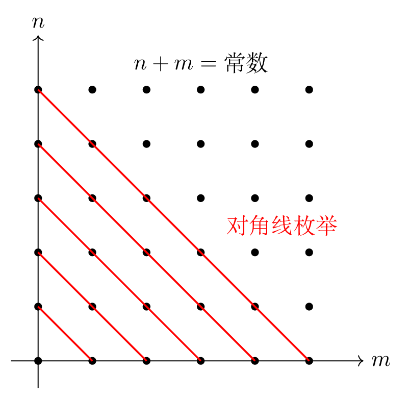

附录
19.2 数域
Definition 19.14. 复数集的一个子集\(K\)如果满足：
\(1\in K\)；
\(a,b\in K\Rightarrow a\pm b,ab\in K\)，\(a,b\in K\)且\(b\ne0\Rightarrow\dfrac{a}{b}\in K\)。
则称\(K\)是一个数域（number filed）。
Theorem 19.3. 任意数域都包含有理数域。
证明. 任取数域\(K\)，由数域的定义可得\(1\in K\)，那么根据数域对其内数加法与减法的封闭性，\(\mathbb{Z}\subseteq K\)。于是任意分数\(\frac{a}{b}\in K,\;b\ne0\)，即\(\mathbb{Q}\subseteq K\)。 ◻
19.3 等价关系
Definition 19.15. 对于任意两个非空集合\(S,M\)，称：
\[\begin{equation*} \{(a,b):a\in S,\;b\in M\} \end{equation*}\]
为集合\(S\)与集合\(M\)的笛卡尔积（Cartesian product），记为\(S\times M\)。其中两个元素\((a_1,b_1)\)与\((a_2,b_2)\)如果满足\(a_1=a_2,\;b_1=b_2\)，则称二者相等，记作\((a_1,b_1)=(a_2,b_2)\)。
Definition 19.16. 设\(S\)是一个非空集合，把\(S\times S\)的一个子集\(W\)叫作\(S\)上的一个二元关系（binary relation）。如果\((a,b)\in W\)，则称\(a\)与\(b\)有\(W\)关系；如果\((a,b)\notin W\)，则称\(a\)与\(b\)没有\(W\)关系。当\(a\)与\(b\)有\(W\)关系时，记作\(aWb\)，或\(a\sim b\)。
Definition 19.17. 集合\(S\)上的一个二元关系\(\sim\)如果具有如下性质：对\(\forall\;a,b,c\in S\)，有：
\(a\sim a\)（反身性）；
\(a\sim b\Rightarrow b\sim a\)（对称性）；
\(a\sim b,\;b\sim c\Rightarrow a\sim c\)（传递性）。
那么称\(\sim\)是集合\(S\)上的一个等价关系（equivalence relationship）。
Definition 19.18. 设\(\sim\)是集合\(S\)上的一个等价关系，\(a\in S\)，令：
\[\begin{equation*} \overline{a}\coloneq\{x\in S:x\sim a\} \end{equation*}\]
称\(\overline{a}\)是由\(a\)确定的等价类（equivalence class），称\(a\)是等价类\(\overline{a}\)的一个代表。
Property 19.3.1. 等价类具有如下基本性质：
\(a\in\overline{a}\)；
\(x\in\overline{a}\Leftrightarrow x\sim a\)；
\(x\sim y\Leftrightarrow\overline{x}=\overline{y}\)。
证明. (1)等价关系具有反身性。(2)由等价类的定义可直接得出。
(3)充分性：因为\(x\in\overline{x}\)且\(\overline{x}=\overline{y}\)，所以\(x\in\overline{y}\)，由\(\overline{y}\)的定义，\(x\sim y\)。
必要性：任取\(a\in\overline{x}\)，则\(a\sim x\)。因为\(x\sim y\)，由等价关系的传递性，\(a\sim y\)，即\(a\in\overline{y}\)。由\(a\)的任意性，\(\overline{x}\subseteq\overline{y}\)。同理可证得\(\overline{y}\subseteq\overline{x}\)，所以\(\overline{x}=\overline{y}\)。 ◻
Corollary 19.1. 用不同代表表示的等价类是一样的，即代表的选择与等价类本身无关。
证明. 由等价类基本性质(3)可直接得到。 ◻
Theorem 19.4. 设\(\sim\)是集合\(S\)上的一个等价关系。对\(\forall\;a,b\in S\)，有\(\overline{a}=\overline{b}\)或\(\overline{a}\cap\overline{b}=\varnothing\)。
证明. 如果\(\overline{a}\ne\overline{b}\)，假设此时\(\overline{a}\cap\overline{b}\ne\varnothing\)，取\(c\in\overline{a}\cap\overline{b}\)，则有\(c\sim a\)且\(c\sim b\)。由等价关系的对称性与传递性可得\(a\sim b\)，根据等价类的基本性质(3)，此时应有\(\overline{a}=\overline{b}\)，矛盾，所以\(\overline{a}\cap\overline{b}=\varnothing\)。 ◻
Definition 19.19. 如果集合\(S\)可以表示为一些非空子集的并集，且这些子集不相交，即：
\[\begin{equation*} \exists\;S_i\subseteq S,\;\underset{i\in I}{\overset{}{\cup}}S_i=S,\;S_i\cap S_j=\varnothing,\;i\ne j,\;i,j\in I \end{equation*}\]
其中\(I\)是指标集。称集合\(\{S_i:i\in I\}\)是\(S\)的一个分割（partition），记作\(\pi(S)\)。
Theorem 19.5. 设\(\sim\)是集合\(S\)上的一个等价关系，则所有等价类组成的集合是\(S\)的一个划分，记作\(\pi_\sim(S)\)。
证明. 对\(\forall\;a_i\in S\)，其中\(i\)是指标集，有\(a_i\in\overline{a_i}\)，于是\(S=\underset{i\in I}{\overset{}{\cup}}\overline{a_i}\)。由定理 19.4可得，若\(i\ne j\)，\(\overline{a_i}\cap\overline{a_j}=\varnothing\)，从而所有等价类组成的集合是\(S\)的一个划分。 ◻
Definition 19.20. 设\(\sim\)是集合\(S\)上的一个等价关系，所有等价类组成的集合称为\(S\)对于关系\(\sim\)的商集（quotient set）。
Definition 19.21. 设\(\sim\)是集合\(S\)上的一个等价关系，一种量或者一种表达式如果对于同一个等价类里的元素是相等的，那么称这种量或表达式是一个不变量；恰好能完全绝对等价类的一组不变量称为完全不变量。
19.4 矩阵
19.4.1 Kronecker乘积
Definition 19.22. 给定两个矩阵 \(A=(a_{ij}) \in M_{m\times n}(K)\) 和 \(B \in M_{p\times q}(K)\)，它们的 Kronecker 乘积 \(A \otimes B\) 是一个大小为 \(mp \times nq\) 的矩阵，定义为：
\[ A \otimes B = \begin{pmatrix} a_{11} B & a_{12} B & \cdots & a_{1n} B \\ a_{21} B & a_{22} B & \cdots & a_{2n} B \\ \vdots & \vdots & \ddots & \vdots \\ a_{m1} B & a_{m2} B & \cdots & a_{mn} B \end{pmatrix} \]
\(a_{ij} B\) 表示矩阵 \(B\) 乘以标量 \(a_{ij},\;i=1,2,\dots,m,\;j=1,2,\dots,n\)。
Property 19.4.1. Kronecker乘积具有如下性质：
\(I_m\otimes I_n=I_{mn}\)；
设\(A\in M_{m\times n}(K),\;B\in M_{p\times q}(K),\;C\in M_{n\times k}(K),\;D\in M_{q\times r}(K)\)，则\((A\otimes B)(C\otimes D)=(AC)\otimes (BD)\)；
设\(A\in M_{m}(K),\;B\in M_{n}(K)\)，则\(A\otimes B\)可逆的充分必要条件为\(A,B\)都可逆，此时有：
\[\begin{equation*} (A\otimes B)^{-1}=A^{-1}\otimes B^{-1} \end{equation*}\]
设\(A=(a_{ij})\in M_{m\times n}(K),\;B=(b_{kl})\in M_{p\times q}(K)\)，则\((A\otimes B)^{\top}=A^{\top}\otimes B^{\top}\)；
证明. (1)由Kronecker乘积的定义：
\[\begin{equation*} I_m\otimes I_n = \begin{pmatrix} I_n & 0 & \cdots & 0 \\ 0 & I_n & \cdots & 0 \\ \vdots & \vdots & \ddots & \vdots \\ 0 & 0 & \cdots & I_n \end{pmatrix}=I_{mn} \end{equation*}\]
(2)由Kronecker乘积的定义：
\[\begin{align*} (A\otimes B)(C\otimes D) &= \begin{pmatrix} a_{11} B & a_{12} B & \cdots & a_{1n} B \\ a_{21} B & a_{22} B & \cdots & a_{2n} B \\ \vdots & \vdots & \ddots & \vdots \\ a_{m1} B & a_{m2} B & \cdots & a_{mn} B \end{pmatrix} \begin{pmatrix} c_{11} D & c_{12} D & \cdots & c_{1k} D \\ c_{21} D & c_{22} D & \cdots & c_{2k} D \\ \vdots & \vdots & \ddots & \vdots \\ c_{n1} D & c_{n2} D & \cdots & c_{nk} D \end{pmatrix} \\ &= \begin{pmatrix} \sum\limits_{i=1}^{n}a_{1i}c_{i1}BD & \sum\limits_{i=1}^{n}a_{1i}c_{i2}BD & \cdots &\sum\limits_{i=1}^{n}a_{1i}c_{ik}BD \\ \sum\limits_{i=1}^{n}a_{2i}c_{i1}BD & \sum\limits_{i=1}^{n}a_{2i}c_{i2}BD & \cdots &\sum\limits_{i=1}^{n}a_{2i}c_{ik}BD \\ \vdots & \vdots & \ddots & \vdots \\ \sum\limits_{i=1}^{n}a_{mi}c_{i1}BD & \sum\limits_{i=1}^{n}a_{mi}c_{i2}BD & \cdots &\sum\limits_{i=1}^{n}a_{mi}c_{ik}BD \\ \end{pmatrix} \\ &=(AC)\otimes (BD) \end{align*}\]
(3)必要性：假设此时\(A\)不可逆，则存在非零向量\(x\)使得\(Ax=\mathbf{0}\)。取非零向量\(y\)，则\((x\otimes y)\)不是一个零向量。由(2)可得：
\[\begin{equation*} (A\otimes B)(x\otimes y)=(Ax)\otimes(By)=\mathbf{0}\otimes(By)=\mathbf{0} \end{equation*}\]
因为\(A\otimes B\)可逆，所以不存在非零向量\(z\)使得\((A\otimes B)z=\mathbf{0}\)，但此时有\((A\otimes B)(x\otimes y)=\mathbf{0}\)，矛盾，所以\(A\)可逆。同理可得\(B\)可逆。
充分性：由(1)(2)可得：
\[\begin{gather*} (A\otimes B)(A^{-1}\otimes B^{-1})=(AA^{-1})\otimes(BB^{-1})=I_m\otimes I_n=I_{mn} \\ (A^{-1}\otimes B^{-1})(A\otimes B)=(A^{-1}A)\otimes(B^{-1}B)=I_m\otimes I_n=I_{mn} \end{gather*}\]
所以\(A\otimes B\)可逆，逆矩阵就是\((A^{-1}\otimes B^{-1})\)。
(4)对任意的\(1\leqslant i\leqslant m,\;1\leqslant j\leqslant n,\;1\leqslant k\leqslant p,\;1\leqslant l\leqslant q\)，元素\(a_{ij}b_{kl}\)在\(A\otimes B\)中的行标为\((i-1)p+k\)，列标为\((j-1)q+l\)。于是\(a_{ij}b_{kl}\)在\((A\otimes B)^{\top}\)中的列标为\((i-1)p+k\)，行标为\((j-1)q+l\)。而\(A^{\top}\otimes B^{\top}\)列标为\((i-1)p+k\)、行标为\((j-1)q+l\)的元素为\(a_{ij}b_{kl}\)，于是\((A\otimes B)^{\top}=A^{\top}\otimes B^{\top}\)。 ◻
19.4.2 向量化算子
Definition 19.23. 设\(A=(a_{ij})\in M_{s\times m}(K)\)，则：
\[\begin{gather*} \operatorname{vec}(A)=(a_{11},a_{21},\dots,a_{s1},a_{12},a_{22},\dots,a_{s2},\dots,a_{1m},a_{2m},\dots,a_{sm})^{\top} \\ \operatorname{rvec}(A)=(a_{11},a_{12},\dots,a_{1m},a_{21},a_{22},\dots,a_{2m},\dots,a_{s1},a_{s2},\dots,a_{sm}) \end{gather*}\]
称\(\operatorname{vec}\)与\(\operatorname{rvec}\)为向量化算子。
19.4.2.1 交换矩阵的定义及其性质
Definition 19.24. 对\(A\in M_{s\times m}(K)\)，存在唯一的\(K_{sm}\in M_{sm\times sm}(K)\)，使得：
\[\begin{equation*} K_{sm}\operatorname{vec}(A)=\operatorname{vec}(A^{\top}) \end{equation*}\]
称\(K_{sm}\)为交换矩阵（commutation matrix）。
19.4.2.2 向量化算子的性质
Property 19.4.2. 向量化算子具有如下性质：
设\(A,B\in M_{s\times m}(K)\)，则\(\forall\;k_1,k_2\in K, \operatorname{vec}(k_1A+k_2B)=k_1\operatorname{vec}(A)+k_2\operatorname{vec}(B)\)，即向量化算子是线性算子；
设\(A,B\in M_{s\times m}(K)\)，则\(\operatorname{tr}(A^{\top}B)=\operatorname{vec}(A)^{\top}\operatorname{vec}(B)\)；
设\(A\in M_{s\times m}(K),\;B\in M_{m\times n}(K),\;C\in M_{n\times p}(K)\)，\(\operatorname{vec}(ABC)=(C^{\top}\otimes A)\operatorname{vec}(B)\)；
证明. (1)是显然的；
(2)因为：
\[\begin{equation*} \operatorname{tr}(A^{\top}B)=\sum_{i=1}^{m}\sum_{j=1}^{s}a_{ji}b_{ji} \end{equation*}\]
所以：
\[\begin{align*} \operatorname{vec}(A)^{\top}\operatorname{vec}(B) &=(a_{11},a_{21},\dots,a_{s1},a_{12},a_{22},\dots,a_{s2},\dots,a_{1m},a_{2m},\dots,a_{sm}) \\ &\quad\cdot(b_{11},b_{21},\dots,b_{s1},b_{12},b_{22},\dots,b_{s2},\dots,b_{1m},b_{2m},\dots,b_{sm})^{\top} \\ &=\sum_{i=1}^{m}\sum_{j=1}^{s}a_{ji}b_{ji} \\ &=\operatorname{tr}(A^{\top}B) \end{align*}\]
(3)设\(B=(B_1,B_2,\dots,B_n),\;C=(C_1,C_2,\dots,C_p)\)，则\(ABC\)的第\(k\)列：
\[\begin{align*} ABC[:,k] &=A(B_1,B_2,\dots,B_n)C_k =A\sum_{i=1}^{n}B_ic_{ik} \\ &=(c_{1k}A,c_{2k}A,\dots,c_{nk}A) \begin{pmatrix} B_1 \\ B_2 \\ \vdots \\ B_n \end{pmatrix} =(C_k^{\top}\otimes A)\operatorname{vec}(B) \end{align*}\]
于是：
\[\begin{align*} \operatorname{vec}(ABC) &= \begin{pmatrix} ABC[:,1] \\ ABC[:,2] \\ \vdots \\ ABC[:,p] \end{pmatrix} = \begin{pmatrix} (C_1^{\top}\otimes A)\operatorname{vec}(B) \\ (C_2^{\top}\otimes A)\operatorname{vec}(B) \\ \vdots \\ (C_p^{\top}\otimes A)\operatorname{vec}(B) \end{pmatrix} \\ &= \begin{pmatrix} C_1^{\top}\otimes A \\ C_2^{\top}\otimes A \\ \vdots \\ C_p^{\top}\otimes A \end{pmatrix} \operatorname{vec}(B) =(C^{\top}\otimes A)\operatorname{vec}(B) \end{align*}\]
◻
19.4.3 平方根阵
Definition 19.25. 设对称阵\(A\in M_n(\mathbb{R})\)，其特征值记为\(\lambda_i,\;i=1,2,\dots,n\)。因为\(A\)是一个实对称阵，由[缺失引用：prop:RMatEigen](3)可知存在正交矩阵\(Q\)使得\(A=Q^{\top}\operatorname{diag}\{\lambda_1, \lambda_2, \dots, \lambda_{n}\}Q\)。若\(A\geqslant0\)，由定理 2.18(3.5)可知\(\lambda_i\geqslant0,\;i=1,2,\dots,n\)，记：
\[\begin{equation*} \varLambda^{\frac{1}{2}}=\operatorname{diag}\{\lambda_1^{\frac{1}{2}},\lambda_2^{\frac{1}{2}},\dots,\lambda_n^{\frac{1}{2}}\} \end{equation*}\]
称：
\[\begin{equation*} A^{\frac{1}{2}}=Q^{\top}\varLambda^{\frac{1}{2}} Q \end{equation*}\]
为\(A\)的平方根阵。
Property 19.4.3. 设对称阵\(A\in M_n(\mathbb{R})\)且\(A\geqslant0\)，\(A^{\frac{1}{2}}\)具有如下性质：
\((A^{\frac{1}{2}})^2=A\)；
\(A^{\frac{1}{2}}\geqslant0\)；
\(A^{\frac{1}{2}}\)是对称阵；
证明. 由\(A^{\frac{1}{2}}\)的定义，有\(A^{\frac{1}{2}}=Q^{\top}\varLambda^{\frac{1}{2}}Q\)和\(A=Q^{\top}\operatorname{diag}\{\lambda_1, \lambda_2, \dots, \lambda_{n}\}Q\)，其中\(Q\)是一个正交矩阵，\(\varLambda^{\frac{1}{2}}=\operatorname{diag}\{\lambda_1^{\frac{1}{2}},\lambda_2^{\frac{1}{2}},\dots,\lambda_n^{\frac{1}{2}}\}\)，\(\lambda_i,\;i=1,2,\dots,n\)为\(A\)的特征值。
(1)显然：
\[\begin{equation*} (A^{\frac{1}{2}})^2=Q^{\top}\varLambda^{\frac{1}{2}}QQ^{\top}\varLambda^{\frac{1}{2}}Q=Q^{\top}(\varLambda^{\frac{1}{2}})^2Q=Q^{\top}\operatorname{diag}\{\lambda_1, \lambda_2, \dots, \lambda_{n}\}Q=A \end{equation*}\]
(2)因为\(Q\)是正交矩阵，所以\(Q^{\top}=Q^{-1}\)。于是：
\[\begin{equation*} QA^{\frac{1}{2}}Q^{-1}=\varLambda^{\frac{1}{2}} \end{equation*}\]
由[缺失引用：theo:DiagCondition1]的必要性可知，\(\lambda_i^{\frac{1}{2}}\)为\(A^{\frac{1}{2}}\)的特征值，而\(\lambda_i\geqslant0\)，由定理 2.18(3.5)可知\(A^{\frac{1}{2}}\geqslant0\)。
(3)显然：
\[\begin{equation*} (A^{\frac{1}{2}})^{\top}=(Q^{\top}\varLambda^{\frac{1}{2}} Q)^{\top}=Q^{\top}(\varLambda^{\frac{1}{2}})^{\top}Q=Q^{\top}\varLambda^{\frac{1}{2}}Q=A^{\frac{1}{2}} \end{equation*}\]
◻
19.4.3.1 平方根阵的逆矩阵
Theorem 19.6. 设对称阵\(A\in M_n(\mathbb{R})\)，其特征值记为\(\lambda_i,\;i=1,2,\dots,n\)。因为\(A\)是一个实对称阵，由[缺失引用：prop:RMatEigen](3)可知存在正交矩阵\(Q\)使得\(A=Q^{\top}\operatorname{diag}\{\lambda_1, \lambda_2, \dots, \lambda_{n}\}Q\)。若\(A>0\)，由定理 2.17(3.5)可知\(\lambda_i>0,\;i=1,2,\dots,n\)，记：
\[\begin{equation*} \varLambda^{-\frac{1}{2}}=\operatorname{diag}\{\lambda_1^{-\frac{1}{2}},\lambda_2^{-\frac{1}{2}},\dots,\lambda_n^{-\frac{1}{2}}\} \end{equation*}\]
则：
\[\begin{equation*} A^{-\frac{1}{2}}=Q^{\top}\varLambda^{-\frac{1}{2}} Q \end{equation*}\]
是\(A^{\frac{1}{2}}\)的逆矩阵。
证明. 显然：
\[\begin{equation*} A^{\frac{1}{2}}A^{-\frac{1}{2}}=Q^{\top}\operatorname{diag}\{\lambda_1^{\frac{1}{2}},\lambda_2^{\frac{1}{2}},\dots,\lambda_n^{\frac{1}{2}}\}QQ^{\top}\operatorname{diag}\{\lambda_1^{-\frac{1}{2}},\lambda_2^{-\frac{1}{2}},\dots,\lambda_n^{-\frac{1}{2}}\}Q=I \end{equation*}\]
◻
Property 19.4.4. 设对称阵\(A\in M_n(\mathbb{R})\)且\(A>0\)，\(A^{\frac{1}{2}}\)具有如下性质：
\((A^{-\frac{1}{2}})^2=A^{-1}\)；
\(A^{-\frac{1}{2}}>0\)；
\(A^{-\frac{1}{2}}\)是对称阵；
证明. 由\(A^{-\frac{1}{2}}\)的定义，有\(A^{-\frac{1}{2}}=Q^{\top}\varLambda^{-\frac{1}{2}}Q\)和\(A=Q^{\top}\operatorname{diag}\{\lambda_1, \lambda_2, \dots, \lambda_{n}\}Q\)，其中\(Q\)是一个正交矩阵，\(\varLambda^{-\frac{1}{2}}=\operatorname{diag}\{\lambda_1^{-\frac{1}{2}},\lambda_2^{-\frac{1}{2}},\dots,\lambda_n^{-\frac{1}{2}}\}\)，\(\lambda_i,\;i=1,2,\dots,n\)为\(A\)的特征值。
(1)显然：
\[\begin{equation*} (A^{-\frac{1}{2}})^2=Q^{\top}\varLambda^{-\frac{1}{2}}QQ^{\top}\varLambda^{-\frac{1}{2}}Q=Q^{\top}\operatorname{diag}\{\lambda_1^{-1},\lambda_2^{-1},\dots,\lambda_n^{-1}\}Q \end{equation*}\]
而：
\[\begin{align*} A^{-1}&=(Q^{\top}\operatorname{diag}\{\lambda_1, \lambda_2, \dots, \lambda_{n}\}Q)^{-1}=Q^{-1}\operatorname{diag}\{\lambda_1^{-1},\lambda_2^{-1},\dots,\lambda_n^{-1}\}(Q^{\top})^{-1} \\ &=Q^{\top}\operatorname{diag}\{\lambda_1^{-1},\lambda_2^{-1},\dots,\lambda_n^{-1}\}Q \end{align*}\]
所以\((A^{-\frac{1}{2}})^2=A^{-1}\)。
(2)因为\(Q\)是正交矩阵，所以\(Q^{\top}=Q^{-1}\)。于是：
\[\begin{equation*} QA^{-\frac{1}{2}}Q^{-1}=\varLambda^{-\frac{1}{2}} \end{equation*}\]
由[缺失引用：theo:DiagCondition1]的必要性可知，\(\lambda_i^{-\frac{1}{2}}\)为\(A^{-\frac{1}{2}}\)的特征值，而\(\lambda_i>0\)，由定理 2.17(3.5)可知\(A^{\frac{1}{2}}>0\)。
(3)显然：
\[\begin{equation*} (A^{-\frac{1}{2}})^{\top}=(Q^{\top}\varLambda^{-\frac{1}{2}} Q)^{\top}=Q^{\top}(\varLambda^{-\frac{1}{2}})^{\top}Q=Q^{\top}\varLambda^{-\frac{1}{2}}Q=A^{-\frac{1}{2}} \end{equation*}\]
◻
Theorem 19.7. 设\(\{A_n\}\)是一列集合，且对每个\(n\in\mathbb{N}\)，\(A_n\)都是至多可列集，则：
\[\begin{equation*} A=\underset{n=1}{\overset{+\infty}{\cup}}A_n \end{equation*}\]
也是至多可列集。
证明. 由于每个\(A_n\)至多可列，存在映射\(f_n:\mathbb{N}\to A_n\)使得\(f_n(\mathbb{N})=A_n\)，于是\(A\)中的任一元素都可写成\(f_n(m)\)的形式，其中\((n,m)\in\mathbb{N}\times\mathbb{N}\)。对\(\mathbb{N}\times\mathbb{N}\)进行对角线枚举即可，即按\(n+m=0,1,2,\dots\)的顺序，依次枚举所有满足\(n+m=k\)的\((n,m)\)：
\[\begin{align*} &(0,0), \\ &(0,1),(1,0), \\ &(0,2),(1,1),(2,0), \\ &\dots \end{align*}\]
即可枚举完\(A\)。 ◻

推论 1 Corollary 19.2. 有理数是可列的。
证明. 有理数可以表示为整数的商，由定理 19.7即可得出结论。 ◻